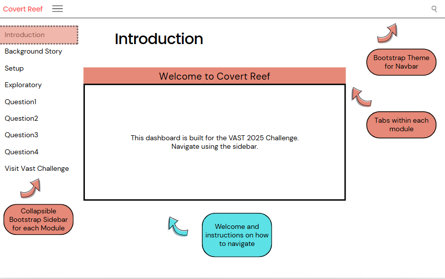
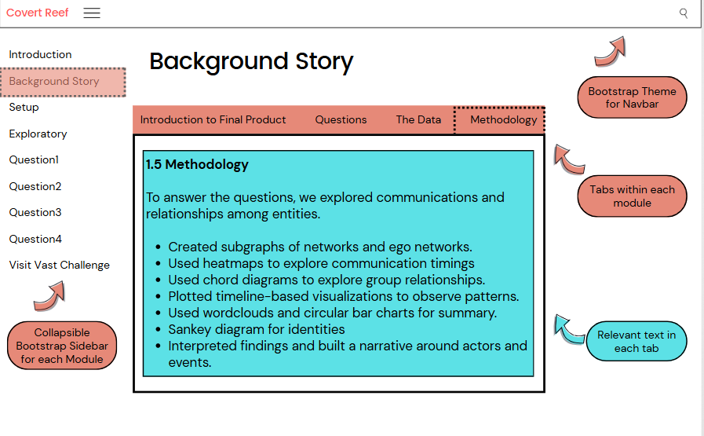
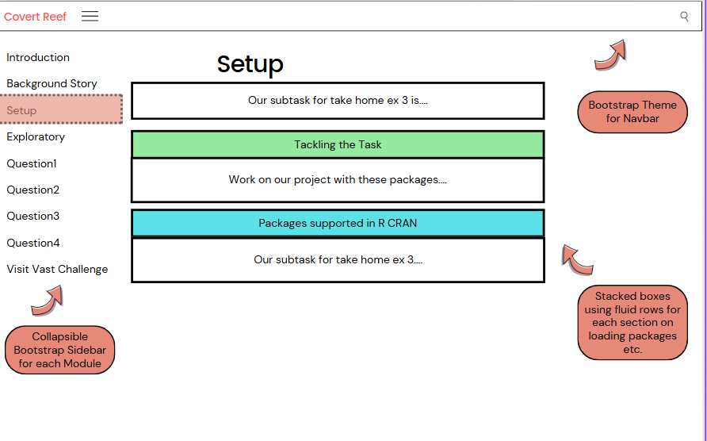
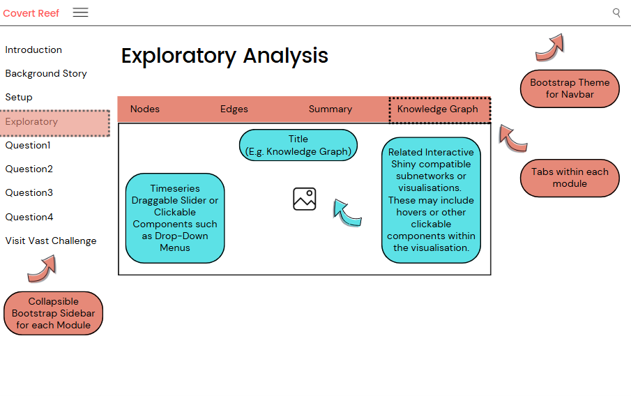
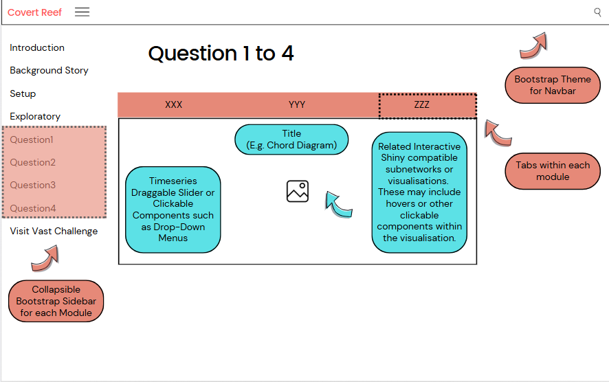

📓 Storyboard UI Design
Our shiny app will look at networks and patterns, with the network graph as the core visualizations, and other tables and charts as accompanying visualization.
Website Look -Netlify
This would be the prototype of the layout structure with navbar at the top, and sidebar layout at the right side. Codes will be provided as well in panel-tabsets which will support interactivity for Quarto + Shiny visualisations.

Shiny Dashboard for Networks and Visualisations
Principles of usability and interactivity:
Our shiny compatible visualisations will have timeseries or related interactive shiny compatible subnetworks or visualisations. These may include hovers or other clickable components.
The ui.R script controls the layout and appearance of a shiny app.
- ui<- fluidPage() which creates a display to adjust to dimensions
- titlePanel and sidebarLayout to add to fluidPage. We will create a basic Shiny application with a sidebar.
The server.R script contains the instructions to build the Shiny app.
- server<- function(input, output) {}
- We will be using
selectInput(),sliderInput(),plotOutput(), etc to assist in the visualisations and interactivity.
shinyApp(ui=ui, server=server)
Prototypes:




….

Parameters and Outputs:
The Shiny app will include some of these parts.
Knowledge graph
As the entire network is very large, containing 1,159 nodes and 3,226 edges, it is not suitable to visualize the entire network. Hence, we will plot with subgraphs and other visualisations.
Reference Node
For Nadia’s ego network, we require a reference node (Nadia).
Network depth
In relation to the reference node, this serves to narrow down the network to view. The depth dictates how far from the reference node to network. As Nadia’s networks are at distance 1 or distance 2, we will add an option to toggle whether to render the full network or use the option to render by distance to the reference node.
Plot area
Shows the network or visual plot. It will be interactive to enable closer inspection of network or visual elements.
These are some prototypes of the webpage and shiny application that we are planning to build for the project. We would like to get to the bottom of the activities brewing at Oceanus such as the Nemo Reef Operation. Hence, enhancing the whole user experience as they follow us along on uncovering the story.
The users can select inputs such as:
Timeseries sliders
Clickable components
Hovers
Drop down menus
The application will output:
Details of communication flows of characters of certain time period
Names of characters that are related to each other of certain time period
Visualisation:
We added shapes and colours to distinguish the Entity nodes (square, circle, triangle, diamond, short oval), relationship node (long oval), and Event-Communication nodes (star).
We kept the colours distinct from each other and as minimal as possible to be easy on the eyes.
Faceting was used to create subplots for clarity and differentiation.
Graph titles, subtitles and legends components were used for graphs.
Interactivity were used to segment and also as a means to reel the user in.